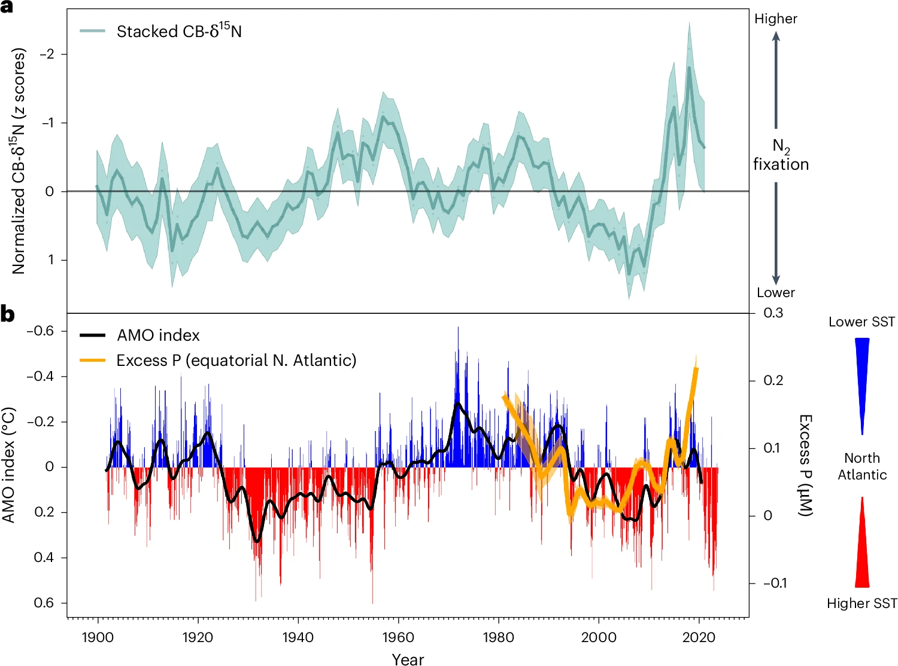
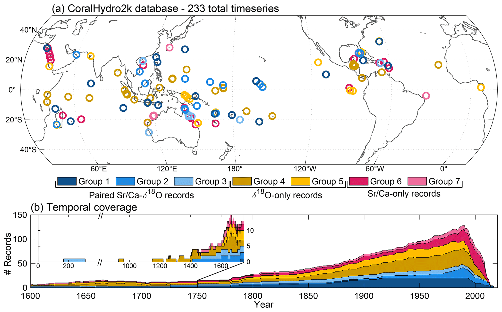
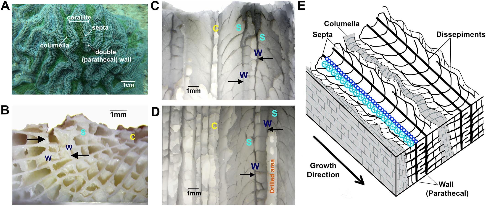
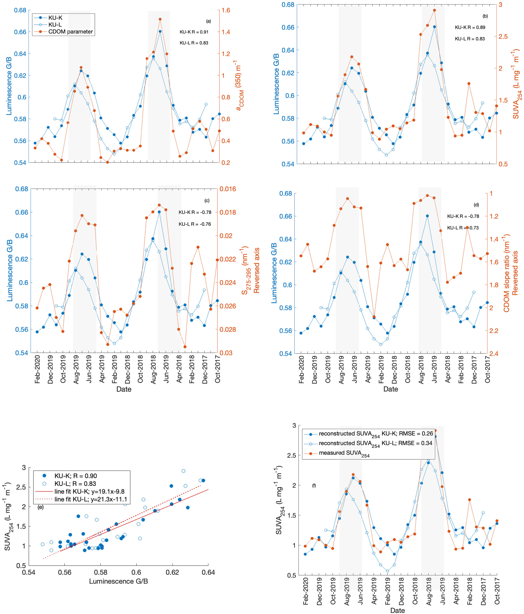
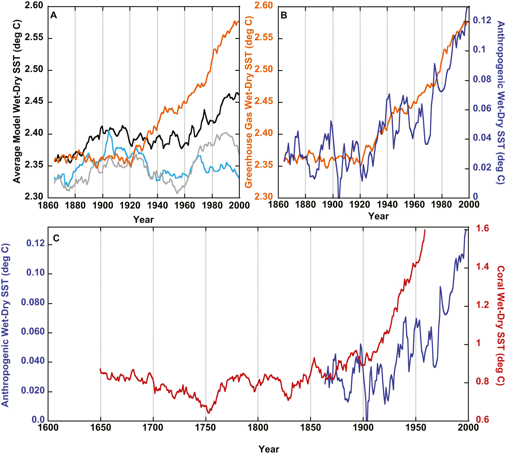
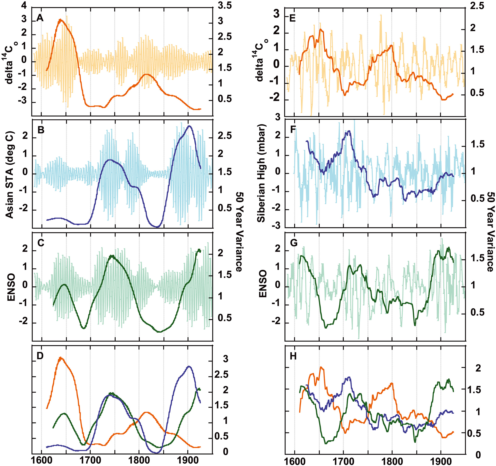
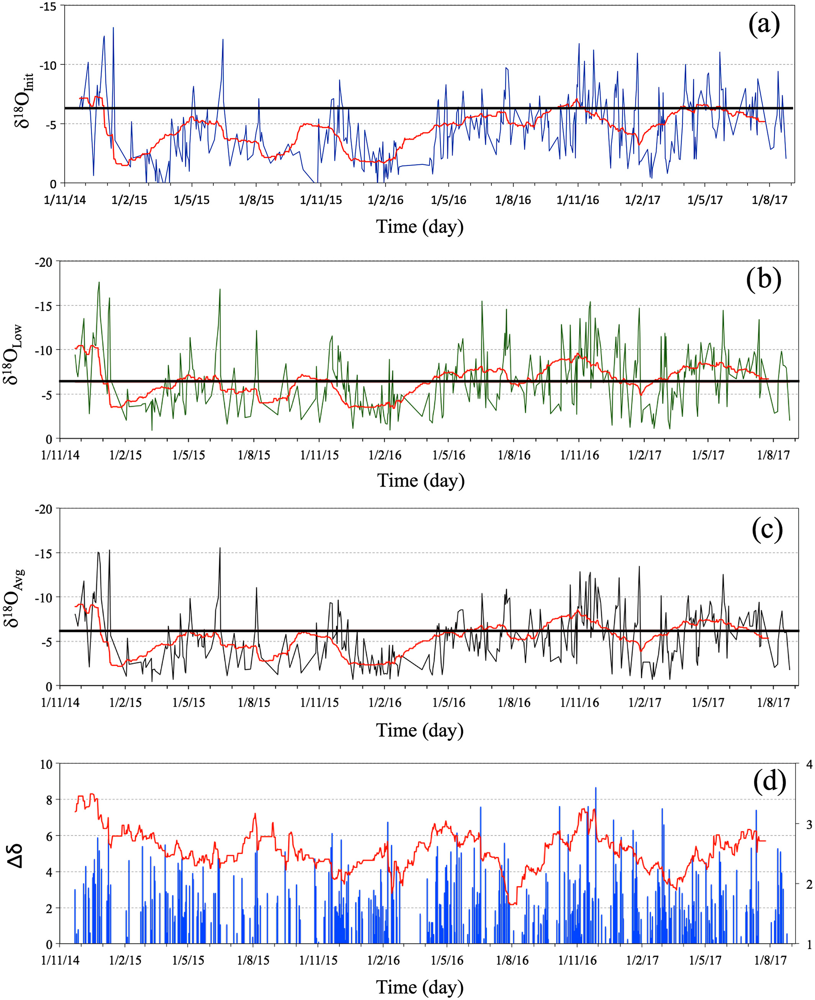

My research aims to reconstruct past environmental conditions to better understand and identify short-term (seasonal) to long-term (decadal-to-centennial) climatic and oceanographic processes distinguishing natural climate fluctuations from human-induced climate change.
For my dissertation, I worked on a 185-year coral core from Tobago to reconstruct past marine environments in the western tropical north Atlantic. I generated high resolution records of trace metals (Sr/Ca, Ba/Ca), and stable isotopes (δ18O) to look into past sea surface temperatures and regional hydroclimate variability. As part of my graduate research, I also utilized radiocarbon (∆14C) isotopes to reconstruct ocean circulation changes in the tropical Atlantic, which is a critical region for understanding the upper limb of AMOC (Atlantic Meridional Overturning Circulation) variability. I leverage publicly available datasets, i.e. in-situ observations and satellite-derived reanalysis products, to compare modern climate information with geochemical proxies to interpret and constrain past climate variability. My work provides context for recent observed climate change and informs future predictions and projections.
Looking ahead, I am interested in expanding my expertise in climate research by integrating historical data with modern observations, climate model outputs, and robust data analysis to address outstanding questions and challenges related to current and future climate change.
Publications

Jung, J., Duprey, N. N., [and 40 others including Ong, M. R.,] (2025). Equatorial upwelling of phosphorus drives Atlantic N2 fixation and Sargassum blooms. Nature Geoscience, 1-7.
A 120-year reconstruction using coral-bound nitrogen isotopes reveals that equatorial Atlantic upwelling of excess phosphorus is the primary driver of both nitrogen fixation and massive Sargassum blooms in the Caribbean. This study found that when Atlantic climate cycles strengthen equatorial upwelling, phosphorus-rich waters fuel nitrogen-fixing bacteria living on Sargassum, giving the seaweed a competitive advantage in nutrient-poor tropical waters. This mechanism explains why the Great Atlantic Sargassum Belt emerged after 2011, when seaweed reached the phosphorus-rich equatorial region, and why blooms intensify during negative phases of the Atlantic Meridional Mode (where sea surface temperatures in the tropical North Atlantic are anomalously colder), providing crucial predictive power for forecasting future blooms that impact Caribbean coastal communities.

Walter, R. M., Sayani, H. R., Felis, T., Cobb, K. M., Abram, N. J., Arzey, A. K., Atwood, A., Brenner, L. D., Dassié, E. P., DeLong, K. L., Ellis, B., Emile-Geay, J., Fischer, M. J., Goodkin, N. F., Hargreaves, J. A., Kilbourne, K. H., Krawcyzk, H. A., McKay, N. P., Moore, A. L., Murty, S. A., Ong, M. R., Ramos, R. D., Reed, E. V., Samanta, D., Sanchez, S. C., Zinke, J., and the PAGES CoralHydro2K Project Members (2023). The CoralHydro2K Database: a global, actively curated compilation of coral δ18O and Sr/Ca proxy records of tropical ocean hydrology and temperature for the Common Era. Earth System Science Data, 15(5), 2081-2116.
This study presents the CoralHydro2k database, a global, actively curated compilation of coral stable oxygen isotope and strontium-to-calcium ratio records spanning the Common Era. The database contains 179 coral records from 124 unique locations across tropical and subtropical oceans, including 54 paired records that enable independent reconstruction of both sea surface temperature and hydrological variability. With 88% of records providing data coverage from 1800 to present, the database tracks large-scale temperature and hydrological patterns, revealing that records correlate significantly with instrumental sea surface temperature across 56-60% of tropical and subtropical oceans at annual resolution. The compilation demonstrates high local reproducibility at most sites and shows that coral records capture dominant patterns of climate variability at seasonal, interannual, and decadal timescales. By employing standardized metadata following FAIR data principles and the Linked Paleo Data framework, this comprehensive resource is well-suited for investigating past climate variability, comparing with climate model simulations including isotope-enabled models, and advancing paleodata-assimilation projects. As an actively curated database with annual updates planned, CoralHydro2k provides the scientific community with an essential tool for contextualizing modern climate change and improving understanding of tropical ocean hydroclimate evolution over recent centuries.

Ong, M. R., Goodkin, N. F., Guppy, R., Hughen, K. A. (2022). Colpophyllia natans from Tobago, a novel paleoclimate archive for reconstructing sea surface temperatures in the tropical Atlantic. Paleoceanography and Paleoclimatology, 37(12), e2022PA004483.
This study presents the first evaluation and validation of Colpophyllia natans coral as a paleoclimate archive for sea surface temperature reconstruction in the North Atlantic. Massive, long-lived Siderastrea and Diploria corals commonly used for temperature reconstructions in this region rarely exceed 200 years in age, creating a critical need for alternative coral species. Despite C. natans being a highly ubiquitous tropical Atlantic coral known to grow large colonies potentially containing environmental records spanning several hundred years, its low density and complicated architecture have previously posed challenges for climate signal extraction. This research demonstrates that microsampling along a single thecal wall of C. natans allows for robust strontium to calcium ratio-sea surface temperature calibrations at monthly to interannual timescales. Both C. natans and S. siderea captured similar temperature variations, enabling the creation of a composite interspecies temperature record that correlated even more strongly with instrumental data than individual coral records. Spatial correlation analysis revealed that the boreal winter interspecies record captures coherent patterns linked to the North Atlantic Oscillation, demonstrating the potential of Tobago corals to track regional, long-term climate trends across the wider North Atlantic. This breakthrough expands the available toolkit for paleoceanographic research in the tropical Atlantic, enabling longer and more geographically diverse reconstructions of past climate variability.

Kaushal, N., Tanzil, J. T. I., Zhou, Y., Ong, M. R., Goodkin, N. F., Martin, P. (2022). Environmental Calibration of Coral Luminescence as a Proxy for Terrigenous Dissolved Organic Carbon Concentration in Tropical Coastal Oceans. Geochemistry, Geophysics, Geosystems, 23(10), e2022GC010529.
This study demonstrates that coral skeletal luminescence can be used as a quantitative proxy to reconstruct terrigenous dissolved organic carbon (tDOC) concentration and chromophoric dissolved organic matter (CDOM) absorption in tropical coastal oceans. Using two replicate coral cores from Singapore alongside concurrent biogeochemical measurements, this paper showed that the coral luminescence green-to-blue ratio strongly correlates with tDOC concentration, with the ability to reconstruct values with an error of approximately 6 µmol/kg. The method can also reconstruct the full CDOM absorption spectrum from 230 to 550 nm and the specific ultraviolet absorbance at 254 nm, a key parameter for understanding organic carbon reactivity. Comparison with a core from Borneo revealed site-specific offsets but similar relationship slopes, validating the proxy's robustness across locations. This breakthrough establishes a method to investigate the drivers and ecological consequences of land to ocean carbon fluxes in tropical coastal seas over decadal to centennial timescales, addressing a critical gap in understanding this significant component of the global carbon cycle.

Goodkin, N. F., Samanta, D., Bolton, A., Ong, M. R., Phan, K. H., Vo, S. T., Karnauskas, K. B., Hughen, K. A., (2021). Natural and Anthropogenic Forcing of Multi-decadal to Centennial Scale Variability of Sea Surface Temperature in the South China Sea. Paleoceanography and Paleoclimatology, 36(10), e2021PA004233.
This study analyzed 400 years of coral-derived sea surface temperature records from Vietnam, revealing that the Interdecadal Pacific Oscillation drives multi-decadal variability in both wet and dry seasons. For three centuries, wet and dry season temperatures moved in tandem, maintaining a consistent seasonal difference of approximately 0.8°C. However, around 1900, coinciding with rising greenhouse gas levels, this long-standing pattern abruptly broke down. The dry season continued its natural cooling trend while the wet season temperatures plateaued, causing the seasonal temperature difference to double by present day. Climate model simulations confirm that greenhouse gases are the primary driver of this decoupling, with projections showing increased heat transport into the western South China Sea during the wet season. This finding demonstrates that even climate patterns stable over multiple centuries can shift rapidly under anthropogenic forcing, with potentially far-reaching consequences for regional weather systems and the billions of people living in Southeast and East Asia.

Goodkin, N. F., Bolton, A., Hughen, K. A., Karnauskas, K. B., Griffin, S., Phan, K. H., Vo, S. T., Ong, M. R., Druffel, E. R. M. (2019). East Asian Monsoon variability since the sixteenth century. Geophysical Research Letters, 46 (9), 4790-4798.
This study reconstructs the long‑term behavior of the East Asian Monsoon (EAM) from 1584 to 1950 using annually resolved coral radiocarbon records, revealing previously undocumented centennial‑scale changes in both summer and winter monsoon strength. The results show an overall decline in EAM variance since around 1600 and suggest that these long‑term variations are influenced by a combination of continental temperature changes, the Siberian High, and El Niño–Southern Oscillation dynamics. The findings improve our understanding of historical monsoon variability and its climate drivers across multiple centuries.

He, S., Goodkin, N. F., Jackisch, D.,
Ong, M. R.,
Samanta, D. (2018). Continuous real‐time analysis of precipitation isotopes.
Hydrological Processes. 32(11), 1531-1545.
This study uses continuous, high-frequency, event-scale isotope measurements of rainfall in Singapore to show that precipitation δ¹⁸O variability is primarily controlled by large-scale convective history and shifting moisture sources rather than local storm processes. The results reveal clear seasonal and interannual signals linked to ITCZ migration, monsoon dynamics, and ENSO, highlighting the value of precipitation isotopes for understanding tropical hydroclimate processes and variability.
{kind=link}
{kind=link}
{kind=link}
{kind=link}
{kind=link}
{kind=link}
{kind=link}